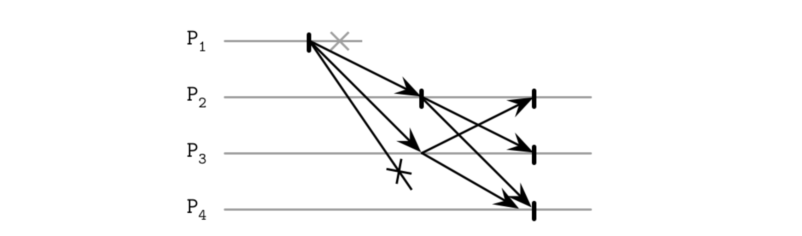
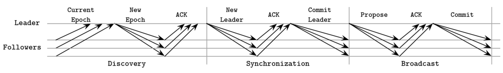
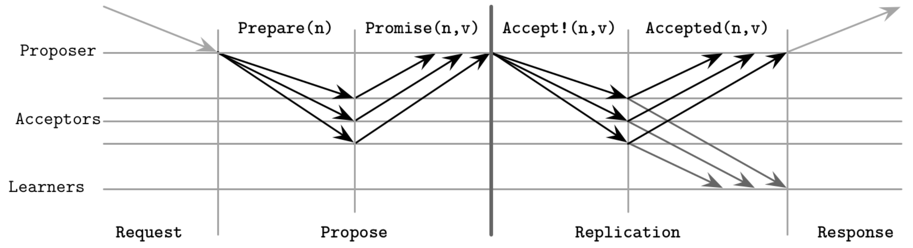
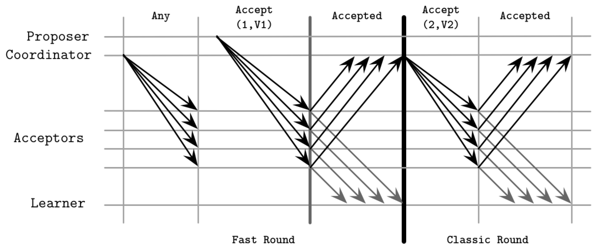
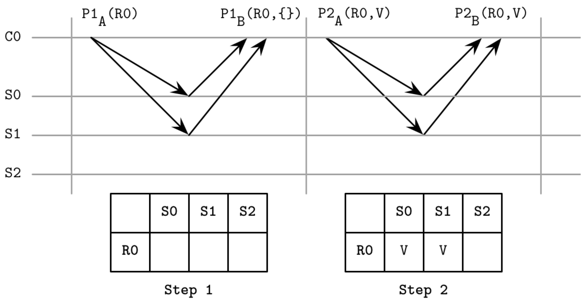
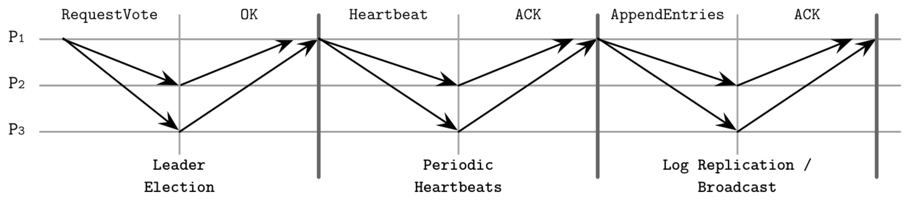
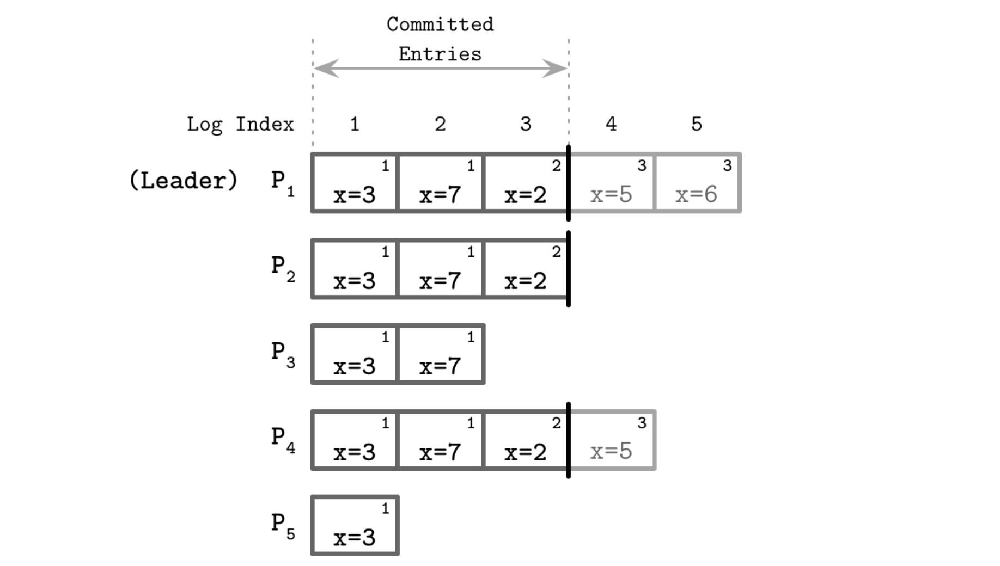

分布式系统之共识
前面已经讨论了分布式系统中的一些概念，从基本的连接、进程以及问题入手，然后介绍故障模型、故障检测器和领导者选举，讨论了一致性模型，最终我们将这些内容放到一起作为分布式系统研究的顶峰：分布式共识。
在分布式系统中，共识算法可以让多个进程就一个值达成一致。FLP 不可能性 给出在完全异步的系统中，在确定的有界时间内，达成共识是不可能的。即使保证了消息传递，一个进程也不可能知道另一个进程是否宕机或者运行缓慢。
在第九章中，我们讨论了在故障检测精确性和故障快速检测二者之间的权衡，共识算法假设模型是异步的并保证安全性，而外部故障检测器可以提供有关其它进程的信息，从而保证活性。由于故障检测并不完全准确，因此可能会出现以下情况：共识算法等待检测到进程故障，或者由于错误地怀疑某个进程有故障而重新启动算法。
进程必须同意由某个参与者提议的一些值，即使几个出现故障。一个进程被认为是正确的：它没有故障，并且可以持续执行算法步骤。共识算法对于将事件按特定顺序排列并确保参与者之间的一致性很有用。使用共识，我们可以建立一个系统，使得进程从一个值转移到另一个值，同时不会丢失客户端对一个值的确定性。
从理论角度来看，共识算法有三个性质：
- 合约性：所有正常进程的决策值均相同
- 有效性：决策的值是由一个进程提出的
- 终止性：所有正确的进程最终都会做出决定，也称之为活性
三个性质的每一个都是很重要的。合约植根于人类对共识的理解中，词典中共识的定义中包含“一致”一词。这意味着，根据合约，不允许任何进程对结果有不同的意见。可以将其视为在特定的地点与您特定的朋友见面的合约：你们所有人都想见面，并且就活动的具体细节达成协议。
有效是必不可少的，如果没有它，共识可能就变得微不足道。共识算法要求所有进程就某个值达成一致。如果进程使用一些预定的任意值作为输出，而不考虑提议的值，则他们将达成一致，但是这种算法的输出是无效的，并且在实际中也是没有用的。
如果没有终止性质，算法将永远运行下去，而不会得出任何结论，或者将无限期等待直到宕机或者进程返回，这也不是很有用。进程必须最终达成共识，并且使得共识算法实际可行，这个过程必须很快完成。
广播
广播在分布式系统中是一种常见的通信抽象。广播算法用于在一个进程集之间传递信息。存在许多广播算法，有不同的假设提供不同的保证。广播是一个重要的原语，在很多地方有应用，包括共识算法。我们前面已经讨论过重要的广播算法——Gossip 传递。
当一个协调节点必须将数据分发到其它参与者时，广播常用来做数据库复制。但是，使该过程可靠并不是一件容易的事：如果协调者在将消息分发给某些节点后崩溃，而其他消息却没有崩溃，那么它将使系统处于不一致状态：某些节点观察到一条新消息，而有些则没有 。
广播消息最简单、最直接的方法是通过尽力而为的广播。在这种情况下，发送者负责确保将消息传递到所有目标。如果失败，则其他参与者不会尝试重新广播该消息，并且在协调器崩溃的情况下，此类广播将静默失败。
为了使广播可靠，即使发送者在传输过程中崩溃，也需要确保所有正确的进程都接收相同的消息。
要实现可靠广播的简单版本，我们可以使用故障检测器和回退机制。最直接的后退机制是允许接收消息的每个进程将其转发到它知道的所有其他进程。当源进程失败时，其他进程将检测到故障并继续广播消息，从而有效地用N^2个消息淹没(flooding)网络（如图1所示）。 即使发送者崩溃了，消息仍然可以由系统的其余部分接收和传递，从而提高了其可靠性，并允许所有接收者看到相同的消息。

原子广播
尽管通过洪泛算法可以保证消息的传递，但是并不保证任何特定的顺序传递消息。消息最终到底了目的地，但是不知道到达的时间。如果需要按顺序传递消息，必须使用原子广播（也称之为全序广播），既保证了可靠性传递也保证了全序。
一个可靠的的广播保证进程对发送的消息的消息集达成一致，而原子广播可确保它们以相同的消息顺序达成一致（即，每个目标进程的消息传递顺序均相同）。
总结一下，一个消息广播可以保证如下的两个基本性质：
- 原子性：进程必须对收到的消息集达成一致，所有未故障的进程要么会传递消息，要么不传递消息。
- 顺序：所有未故障的进程都以相同的顺序传递消息。
消息以原子方式传递：每个消息或者传递到所有进程或者没有传递，如果消息被传递，每个其它的消息排在它之前或者之后。
虚同步
对于使用广播的组通信的框架之一称之为虚同步。原子广播有助于传递全序消息给一个静态进程组，虚同步传递全序消息到动态对端组。
虚同步将进程组织为组，只要组存在，消息会以相同的顺序发送给所有成员。在这种场景下，模型未指定顺序，某些实现可以利用它来获得性能提升，只要它们提供的顺序在所有成员中都一致。
进程有相同的组视图，消息被关联到组ID：进程只要属于相同的组，则可以看到相同的消息。
一旦参与者中的一个加入离开组或者故障被踢出，组视图发生变化。这是通过向所有成员宣布组变更而发生的。每个消息都与它所属的组唯一关联。
虚同步区分消息接收（组成员接收消息时）和消息传递（当所有组成员接收消息时发生）。 如果消息是在一个视图中发送的，则只能在同一视图中传递消息，这可以通过将当前组与消息关联的组进行比较来确定。收到的消息在队列中保持待处理状态，直到通知该进程成功发送为止。
由于每个消息都属于一个特定的组，除非在组中的所有进程在视图变更之前接收到，没有组成员可以认为这个消息被传递。这意味着所有消息在视图变更前发送和接受，这给我们以原子传递保证。在这种情况下，组视图成为消息广播无法越过的障碍。
一些全序广播算法通过使用负责确定消息顺序的单个进程（定序器）对消息进行排序。这样的算法可能更易于实现，但依赖于检测领导者失败的活跃性。使用定序器可以提高性能，因为我们不需要为每个消息在进程之间建立共识，而可以使用定序器本地视图。这种方法仍然可以通过对请求进行分区来扩展。
尽管其技术稳固，虚同步并未得到广泛采用，并且在最终用户的商业系统中并不常用。
Zookeeper 原子广播
最著名并且被广为人知的原子广播是 ZAB，在 Apache Zookeeper 中使用，Zookeeper 是一个分层的 K-V 存储，被用来保证事件的全序和原子传递，维护副本状态之间的一致性。
在 ZAB 中的进程可以有一个或者两个角色：领导者 和 跟随者。领导者 是一个临时角色。它通过执行算法步骤来驱动进程，将消息广播给跟随者，并建立事件顺序。为了写入新记录和执行最新值的读取，客户端连接到集群中的节点之一。 如果节点碰巧是领导者，它将处理该请求。 否则，它将请求转发给领导者。
为了保证领导者的唯一性，协议时间线被分割为纪元（epoch），用唯一的单调递增的序号类标识。在任何 epoch，只能有一个 领导者。进程从使用任何选举算法找到潜在的领导者开始，只要它选择可能性很高的进程即可。进一步的算法步骤可确保安全性，因此确定潜在的领导者更多是性能优化。前领导者的故障也可能导致潜在的领导者出现。
一旦建立了潜在的领导者，它将分三个阶段执行协议：
- 发现：准领导者了解其他所有进程已知的最新纪元，并提出一个新纪元，该纪元大于任何追随者的当前纪元。 跟随者使用前一个时期中看到的最新事务的标识符响应该纪元的提议。在此步骤之后，没有任何进程会接受较早纪元的广播提议。
- 同步：这个阶段用来从前一个领导者故障中恢复，将落后的跟随者跟上，准领导者发送消息给所有跟随者，提议将其自己作为新纪元的领导者，手机其他的确认消息。只要确认消息收到，领导者就确认了自己的地位。在这一步之后，跟随者不会再接受其他任何进程的变为本纪元的领导者。在同步期间，新的领导者保证跟随者有相同的历史记录，传送由其他早期纪元的其它领导者提交的提议。在传递任何新纪元的提议之前，这些提议需要被传递。
- 广播：一旦跟随者处于同步，活跃的消息发送就开始了。在这个阶段，领导者接受客户端的消息，建立他们的顺序，广播给跟随者：发送一个新的提议，等待跟随者多数派的应答确认，最终提交。这个过程跟两阶段提交类似，但是不存在中止：投票仅仅是确认，客户端不能对有效领导者的提议投反对票。但是领导者在错误纪元的提议不应该予以确认。广播阶段一直持续到领导者出现故障，与跟随者出现网络分区或者由于消息延迟过大而被认为故障。
图 2 给出了 ZAB 算法的三个阶段，消息在每个步骤汇总进行交换。

领导者和跟随者都依靠心跳来确定远端进程的活跃性。如果领导者未从跟随者的多数派中接收到心跳，它将退出领导者的行列，并重新开始选举过程。同样，如果跟随者之一确定领导者崩溃，它将开始新的选举过程。
消息是完全排序的，并且领导者在确认之前的消息之前不会尝试发送下一条消息。即使某些消息被追随者多次接收，但只要遵循传递顺序，它们的重复应用也不会产生其他副作用。ZAB能够处理来自客户端的多个并发状态更新，因为唯一的领导者将接收写入请求，建立事件顺序并广播更新。
全局消息顺序还使ZAB可以提高恢复效率。在同步阶段，跟随者将以最高的提交协议做出应答。领导者可以简单地选择具有最高恢复点提议的节点，这可以是仅有的节点，消息必须从这个节点复制。
ZAB的优点之一是效率高：广播过程仅需要两轮消息，并且可以通过流传输单个最新进程中丢失的消息来恢复领导者故障。拥有一个长时间的领导者会对性能产生正向影响：我们不需要额外的共识回合来建立事件的历史记录，因为领导者可以根据其本地视图对事件进行排序。
Paxos
原子广播是一个等同于在具有崩溃故障的异步系统中达成共识的问题，因为参与者必须就消息顺序达成一致，并且必须能够了解消息顺序。您将在原子广播和共识算法之间在动机和实现方面看到许多相似之处。
可能最广为人知的共识算法是 Paxos。这个算法在 Leslie Lamport 论文“The Part-Time Parliament”中提出。在这篇论文中，共识是在受埃及 Paxos 岛的立法和投票流程启发来描述的。在2001年，作者发布了名为“ Paxos Made Simple”的后续论文，其中介绍了一些更简单的术语，这些术语现在通常用于解释该算法。
Paxos 的参与者可以扮演以下三个角色之一：提议者，接受者或学习者：
-
提议者：从客户端接收请求值，创建接收这些值的请求，尝试从接受者收集投票。
-
接受者：投票接受或拒绝提议者提议的值。 为了容错，该算法要求存在多个接受者，但是为了活性起见，只需要法定人数（多数）的接受者投票即可接受提议。
-
学习者：扮演副本的角色，存储已经提议的结果。
任何参与者都可以扮演任何角色，并且大多数实现将它们并置在一起：单个进程可以同时是提议者，接受者和学习者。
每个提议都包含一个由客户提出的值，以及一个唯一的单调递增的提议编号。 然后使用该数字来确保已执行操作的全序，并在它们之间建立前后发生关系。提案编号通常使用（id，timestamp）对来实现，其中节点ID也是可比较的，可以用来打破时间戳的联系。
Paxos 算法
Paxos 算法可以被分割为两个阶段：投票（或者提议阶段）和复制。在投票阶段，提议者互相竞争来建立领导权。在复制阶段，提议者将值分发给接受者。
对客户端而言，提议者是最初的入口。接受值，尝试从多数派个接受者收集投票。完成后，接受者达成一致的值相关信息分发给学习者，认可结果。学习者可以增加已达成共识的价值的复制因子。
仅一个提议者可以收集多数派投票。在一些场景下，投票可能会在提议者之间被分割，没有任何一个可以收集到这一轮的多数投票，只能强制重新开始。我们将在“失败场景”中讨论竞争提议者的此方案和其他方案。
在提议阶段，提议者发送 Prepare(n) 消息（这里 n 是提议值）给大多数接受者，然后尝试从他们那里收集投票。
当接受者收到准备请求时，它必须做出响应，保留以下不变式：
- 如果此接受者尚未响应序列号较高的准备请求，则承诺不会接受任何序列号较低的提议。
- 如果此接受者较早已经接受（接收到Accept!(m, v_{accepted})消息）任何其他提议，它将以Promise(m，v_{accepted})消息进行响应，通知提议者它已经接受了序列号为m的提议。
- 如果此接受者已经响应了具有较高序号的准备请求，则会通知提议者存在编号更高的提议。
- 接受者可以响应多个准备请求，只要后一个具有更高的序号。
在复制阶段，在收集到多数投票之后，提议者开始复制，通过给接受者提交 Accept!(n, v) 消息，n 是提议序号，v 是提议值。v是与从接受方收到的回复中编号最高的提议相关的值，或者是其自身的任何值（如果他们的回复不包含旧的接受提议）。
接受者接受到序号为 n 的提议，除非在提议阶段以及响应了 Prepare(m)，这里m 是比 n 更大的序号。如果接受者拒绝了提议，通过发送更高的序号通知提议者，这样有助于提议者追赶上。
您可以在图3中看到Paxos来回消息的概括描述。

学习者必须找出已经决定的值，在收到大多数接受者的通知之后才能知道该值。为了让学习者尽快了解新值，接受者可以在接受新值时立即通知学习者。如果学习者不止一个，则每个接受者必须通知每个学习者。可以区分一个或多个学习者，在这种情况下，它将通知其他学习者接受的值。
总之，第一个算法阶段的目的是为该回合建立一个领导者，并知道将要接受的值，从而使领导者可以继续第二阶段：广播该值。
对于基本算法，我们假设每次确定值时都需要执行两个阶段。实际上，我们希望减少算法中的步骤，因此我们允许提议者提出多个值。我们稍后将在“Multi-Paxos”中对此进行详细讨论。
TODO 多数派
TODO 故障场景
Multi-Paxos
到目前为止，我们讨论了经典的 Paxos 算法，我们选择任意的提议者尝试开始 Paxos 算法。这种方法的一个问题是每次复制都需要一轮提议流程。在提议者对这一轮的确立之后，在多数接受者响应了 Promise 请求给提议者的 Prepare 消息之后，才能开始复制。为了避免重复提议阶段，使得提议者可以重用已经验证的位置，我们使用 Multi-Paxos，给出了领导者的概念：一个特殊的提议者。这是一个重要的补充，可以显著提高算法的效率。
拥有一个确立的领导者，可以跳过提议阶段，之间处理复制：分发一个值，手机接收者的确认消息。
在经典的 Paxos 算法中，读取可以通过运行 Paxos 来实现读取，该节点从不完整的回合中手机所有值（如果存在）。之所以必须这样，是因为不能保证最后一个已知的提议者可以保持最新的数据，因为可能有其它提议者修改了状态，而提议者却不知道。
Multi-Paxos 中可能会发生类似的情况：当另一位领导者当选后，我们试图从已知的领导者进行读取，返回过时的数据，这与共识的线性化保证相矛盾。为了避免这种情况并确保没有其他进程可以成功提交值，某些Multi-Paxos的实现使用了租约。领导者定期与参与者联系，通知他们还活着，从而有效地延长了租约。参与者必须做出回应，并允许领导者继续操作，并承诺在租约期内他们不会接受其他领导者的提议。
租约不是正确性保证，而是一种性能优化，该性能优化允许从活跃的领导者那里读取数据而不收集多数派消息。为了确保安全，租约依赖参与者之间的有界时钟同步。如果他们的时钟偏移太大，并且领导者认为其租约仍然有效，而其他参与者认为其租约已过期，则无法保证线性化。
有时将Multi-Paxos描述为应用于某些结构的操作的复制日志。该算法忽略了此结构的语义，仅关注始终复制到该日志的值。为了在进程崩溃的情况下保持状态，参与者保留接收到的消息的持久日志。
为了防止日志无限期增大，应将其内容应用于上述结构。将日志内容与主要结构同步后，创建快照，即可将其截断。日志和状态快照应相互一致，并且快照变更应在日志段被截断的情况下自动应用。
我们可以将单指令Paxos视为一次写入寄存器：我们有一个插槽可以放置一个值，一旦在其中写入值，便无法进行后续修改。在第一步中，提议者争夺寄存器的所有权，在第二阶段中，其中一个写值。同时，可以将Multi-Paxos视为仅附加日志，由一系列此类值组成：我们可以一次写入一个值，所有值都严格排序，并且我们无法修改已写入的值。有一些共识算法的示例，它们提供了读-修改-写寄存器的集合，并使用状态共享而不是复制的状态机，例如Active Disk Paxos和CASPaxos。
快速 Paxos
与经典的 Paxos 算法相比，我们可以将来回次数减少一次，让任何一个提议者联系接受者，而不是建立一个领导者。为此，我们需要增加多数派个数到 2f+1（f 是可以故障的进程数量），与经典的 Paxos 中的 f+1相比，并且将接受者的总数增加到 3f+1。此优化称之为 Fast Paxos。
经典的Paxos算法有一个条件，即在复制阶段，提议者可以选择在提议阶段收集到的任何值。快速Paxos具有两种类型的回合：经典类型，其算法的处理方式与经典版本相同；快速类似，允许接受者接受其他值。
在描述此算法时，我们将把在提议阶段收集了足够数量的响应的提议者称为协调者，并为所有其他提议者保留轮次提议者。一些快速Paxos的描述说客户可以直接联系接受者。
快速类型中，如果在复制阶段允许协调器选择自己的值，则可以向接收者发出特殊的Any消息。在这种情况下，允许接受者将任何提议者的值都视为经典回合，并且他们从协调者那里收到带有该值的消息。换句话说，接受者独立决定他们从不同提议者那里获得的值。
图7显示了Fast Paxos中经典和快速的示例。从图看来，快速部分似乎具有更多执行步骤，但是请记住，在经典回合中，要提交其值，提议者将需要通过协调者来提交其值。

这意味着，接受者在从不同的提议者收到值后，可以决定有冲突的值。当协调者检测到冲突（值冲突）时，它必须重新启动建议阶段，以使接受者收敛到单个值。
Fast Paxos的缺点之一是往返次数增加，并且如果请求率很高，则请求在冲突上的等待时间会增加。表明，由于副本数量的增加以及随后参与者之间交换的消息的增加，尽管步骤减少了，但Fast Paxos的等待时间可能比经典的Paxos更长。
TODO 平等 Paxos
TODO 灵活 Paxos
共识的泛化
Paxos有时可能很难推理：多个角色，多个步骤以及所有可能的变化都很难跟踪。但是我们可以用更简单的术语来考虑它。为了替代参与者之间分离的角色和决策回合，我们可以使用一组简单的概念和规则来实现对单一指令Paxos。我们只是简短地讨论这种方法，因为这是一个相对较新的发展[HOWARD19] ——了解这一点很重要，但是我们尚未看到其实现和实际应用。
我们有一个客户端和一组服务器。每个服务器都有多个寄存器。寄存器具有标识它的索引，只能被写入一次，并且可以处于以下三种状态之一：未写入，包含值和包含nil（特殊的空值）。
位于不同服务器上的具有相同索引的寄存器构成一个寄存器集。每个寄存器集可以具有一个或多个多数派。根据寄存器中的状态，仲裁可以处于未定状态（Any和Maybe v）或已确定状态（None和Decided v）之一：
- Any：依赖后续的操作，这个多数派集合可以决定任何值。
- Manybe v：如果这个多数派达成决定，则其决定只能是 v。
- None：这个多数派不能决定值。
- Decided v：这个多数派已经决定了值 v。
客户端与服务器交换消息并维护一个状态表，在该表中跟踪值和寄存器，并可以推断出仲裁所做出的决定。
为了保持正确性，我们必须限制客户端与服务器进行交互的方式以及客户端可以写入的值以及客户端不能写入的值。就读取值而言，客户端只有在已从同一寄存器集中的服务器多数派中读取了决定的值后，才能输出决定的值。
由于要保证算法的安全性，我们必须保留几个不变式，因此编写规则要稍微复杂一些。首先，我们必须确保客户端不仅仅提供新值：只有当客户端接收到特定值作为输入或从寄存器中读取了特定值后，才可以将特定值写入寄存器。客户端无法在同一寄存器中编写允许不同仲裁的值来决定不同的值。最后，客户端无法写入覆盖先前寄存器集中做出的先前决定的值。
泛化 Paxos 算法
将所有这些规则放在一起，我们可以实现一种通用的Paxos算法，该算法使用写入一次寄存器[HOWARD19]在单个值上达成共识。假设我们有三个服务器[S0，S1，S2]，寄存器[R0，R1，…]和客户端[C0，C1，...]，其中客户端只能写入分配的寄存器子集。我们对所有寄存器（{S0，S1}，{S0，S2}，{S1，S2}）使用简单的多数仲裁。
这里的决策过程包括两个阶段。第一阶段确保将值安全写入寄存器，第二阶段将值写入寄存器：
-
在第一阶段：客户端通过向服务器发送P1A（register）命令来检查要写入的寄存器是否未写入。如果未写入寄存器，则直到寄存器-1为止的所有寄存器都将设置为nil，这将阻止客户端写入以前的寄存器。服务器以到目前为止已写入的一组寄存器作为响应。如果它从大多数服务器接收到响应，则客户端从具有最大索引的寄存器中选择非空值，或者在不存在任何值的情况下从其自己的值中选择。否则，它将重新启动第一阶段。
-
在第二阶段：客户端通过向它们发送P2A（寄存器，值）来通知所有服务器在第一阶段中已选择的值。如果大多数服务器响应此消息，则可以输出决策值。否则，它将从阶段1重新开始。
图9显示了Paxos的通用化（改编自1）。客户端C0尝试提交值V。在第一步期间，客户端C0的状态表为空，并且服务器S0和S1用空寄存器集进行响应，指示到目前为止尚未写入任何寄存器。在第二步中，由于没有写入其他值，因此它可以提交其值V。

这种方法有助于理解Paxos的语义。与其从远程参与者的交互作用来思考状态（例如，提议者找出接受者是否已经接受了不同的提议），我们可以根据最近的已知状态进行思考，从而使决策过程变得简单并消除可能的歧义。不可变的状态和消息传递也可以更容易正确地实现。
我们还可以与原始Paxos进行比较。例如，在客户端发现先前的一个寄存器集具有Maybe v决策的情况下，它选择v并尝试再次提交它，这类似于Paxos中的提议者可以在提议之后提议该值。先前能够将值提交给至少一个接受者的提议者失败。同样，如果在Paxos中，领导者可以通过以较高的提议编号重新开始投票来解决冲突，则在通用算法中，所有未写入的低排名寄存器都将设置为nil。
Raft
十多年，Paxos 都是共识算法的代名词，但在分布式系统社区中也以其难以理解而闻名。在 2013 年，新的称之为 Raft 的算法出现了。研究者开发这个算法，希望其容易理解和实现。首先在论文“In Search of an Understandable Consensus Algorithm”中发表。
分布式系统本身有足够的内在复杂性，并且非常需要一种更简单的算法。除论文外，作者还发布了一个称为 LogCabin 的实现，以解决可能的歧义并帮助未来的实现者更好地理解 Raft 算法。
参与者在本地存储日志，日志包含状态机执行的命令序列。由于进程接受的输入是相同的，并且以相同的顺序包含相同的命令，因此将这些命令应用于状态机可以确保输出结果相同。Raft 通过将领导者作为头等公民来简化共识的实现。领导者用于协调状态机的操作和复制。Raft 与原子广播算法以及 Multi-Paxos 之间有很多相似之处：单个领导者从副本中选出来，做出原子决定，并建立消息顺序。
每个 Raft 中的参与者，可以有下面三个角色中的一个：
- 候选者：领导权是暂时的，任何参与者都可以担任此职务。要成为领导者，节点首先必须过渡到候选状态，并尝试收集多数选票。如果候选人既没有赢得选举也不会输掉选举（投票在多个候选人之间进行，并且他们都不拥有多数选票），那么将确定新的任期，并重新开始选举。
- 领导者：当前临时集群领导者，负责处理客户端请求并与复制状态机进行交互。 领导者是相对于一个周期而言的，这个周期也称之为任期。每个任期由单调递增的数字标识，并且可以持续任意长的时间。如果当前的宕机，崩溃，无响应或被其他进程怀疑为失败，则可以选举新的领导者，这可能是由于网络分区和消息延迟而发生的。
- 跟随者：被动参与者，持久化日志，发送领导者和候选者的请求消息的响应。跟随者是一个跟 accepter 和 learner 类似的角色。每个进程都是以跟随者开始。
为了在不依赖时钟同步的情况下保证全局部分排序，将时间分为任期（也称为代），在此期间，领导者是唯一且稳定的。任期用单调编号，每个命令由任期编号和任期编号中的消息编号唯一标识。
可能会发生不同的参与者不同意当前任期的情况，因为他们可以在不同时间了解新任期，或者可能错过了一个或多个任期的领导人选举。由于每条消息都包含一个任期标识符，因此，如果其中一个参与者发现其任期已过期，则它将该任期更新为编号较高的任期。这意味着在任何给定的时间点可能有多个任期在同时处理中，但是如果发生冲突，则编号较高的一个会获胜。节点只有在开始新的选举过程或发现其任期已过期时才更新该任期。
在启动时，或者每当跟随者没有收到来自领导者的消息并怀疑其崩溃时，都会启动领导者选举过程。参与者试图通过转变为候选状态并从大多数节点收集选票来成为领导者。
图 10 给出了 Raft 中主要部分的顺序图：
- 领导者选举：候选人P1向其他进程发送RequestVote消息。 该消息包括候选人的任期，其知道的最后一个任期，以及它观察到的最后一个日志条目的ID。 在获得多数选票后，该候选人成功当选为本届总统。 每个进程最多可以投票给一位候选人。
- 周期性心跳：该协议使用心跳机制来确保参与者的活力。领导者会定期向所有跟随者发送心跳以维持其任期。如果跟随者在选举超时的时间内没有收到新的心跳，则认为领导者已失败并开始新的选举。
- 日志复制/广播：领导者可以通过发送AppendEntries消息将新值添加到复制日志中。该消息包括领导者的任期，索引和当前正在发送的日志条目之前的日志条目的任期，以及一个或多个要存储的日志条目。

在 Raft 中的领导者角色
领导者只能从拥有所有已提交条目的节点中选举出来：如果在选举期间，跟随者的日志信息（换句话说，具有较高的任期ID，或任期相同但是有更长的日志条目序号）比候选者的日志条目更新，则其投票被拒绝。
为了赢得投票，候选者必须获得多数选票。日志条目总是按顺序复制，因此比较最新条目的ID以了解参与者之一是否最新是足够的。
当选后，领导者必须接受客户请求（也可以从其他节点转发来的客户端请求）并将其复制到跟随者。这是通过将条目附加到其日志中并并行发送给所有跟随者来完成的。
跟随者收到一条AppendEntries消息时，会将消息中的条目追加到本地日志中，并对消息进行确认，从而使领导者知道消息已持久。一旦有足够多的副本发送其确认，该条目即被视为已提交，并在领导者日志中进行了相应的标记。
由于只有最新的候选人才能成为领导者，因此跟随者永远不必使领导者达到最新状态，日志条目仅从领导者到跟随者，而反之亦然。
图 14 给出了这个流程：
a) 一个新命令 x=8 被附加到领导者者的日志中
b) 在值被提交之前，必须复制到参与者的多数参与者中
c) 只要领导者完成复制，就可以本地提交
d) 提交请求被复制到跟随者

图12给出了一个共识的示例，其中P1是领导者，拥有事件的最新视图。领导者通过将条目复制到跟随者，并在收集确认后提交它们来继续进行。提交条目还会在日志中提交其前面的所有条目。只有领导者才能决定是否可以提交该条目。每个日志条目都标有任期ID（每个日志条目框右上角的数字）和日志索引，以标识其在日志中的位置。保证已提交的条目可以复制到参与者的法定人数，并且可以安全地按其在日志中出现的顺序应用于状态机。

故障场景
当多个跟随者成为候选人，而没有候选人可以收集多数票时，这种情况被称为分裂投票。Raft使用随机超时来减少多次后续分离投票选举的可能性。其中一名候选人可以提前开始下一轮选举并收集足够的选票，其它人则休眠并让步。这种方法可以加快选举速度，而无需候选人之间进行任何其他协调。
跟随者可能反应迟钝或反应迟缓，领导者必须尽最大努力确保消息传递。如果未在预期的时间范围内收到确认消息，它可以尝试再次发送消息。作为性能优化，它可以并行发送多个消息。
由于领导者复制的条目有唯一标识，因此可以保证重复发送消息不会破坏日志顺序。跟随者使用其序列ID对消息进行重复数据删除，以确保重复发送不会产生不良后果。
序列ID也用于确保日志顺序。如果领导者发送的紧随其后的条目的ID和期限与根据其自身记录的最高条目不匹配，则跟随者拒绝编号较高的条目。如果不同副本上两个日志中的条目具有相同的任期和相同的索引，则它们存储相同的命令，并且它们之前的所有条目都相同。
Raft保证永远不会将未提交的消息显示为已提交的消息，但是由于网络或副本的速度较慢，已经提交的消息仍可以视为正在进行中，这是无害的属性，可以通过重试客户端命令来解决，直到它终于被提交了。
为了进行故障检测，领导者必须向跟随者发送心跳。这样，领导者可以维持其任期。当节点之一注意到当前领导者已经挂掉时，它将尝试启动选举。新当选的领导者必须将群集的状态还原到最后一个已知的最新日志条目。通过找到一个共同点（领导者和跟随者都同意的最高日志条目），并命令跟随者丢弃此点之后附加的所有（未提交的）条目，可以做到这一点。然后，它会从其日志中发送最新条目，从而覆盖跟随者的历史记录。领导者自己的日志记录不会删除或覆盖：它只能将条目追加到自己的日志中。
总而言之，Raft算法提供了以下保证：
- 给定任期内一次只能选举一位领导人；在同一任期内，没有两个领导人同时活跃。
- 领导者不删除或重新排列其日志内容；它仅向其添加新消息。
- 确保已提交的日志条目存在于后续领导者的日志中，并且无法被回退，因为在提交该条目之前，领导者知道它已被复制。
所有消息均由消息和任期ID唯一标识；当前领导者和后续领导者都不能为不同条目重复使用相同的标识符。
自出现以来，Raft变得非常流行，并且目前在许多数据库和其他分布式系统中使用，包括CockroachDB，Etcd和Consul。这可以归因于其简单性，但也可能意味着Raft有望成为可靠的共识算法的 Promise。
TODO 拜占庭共识
总结
共识算法是分布式系统中最有趣但最复杂的主题之一。在过去的几年中，出现了新的算法和现有算法的许多实现，这证明了该主题的重要性和受欢迎程度日益提高。
在本章中，我们讨论了经典的Paxos算法以及Paxos的多个变体，每个变体都改进了其不同的属性：
- Multi-Paxos：允许提议者保留其角色并复制多个值，而不只是一个值。
- 快速Paxos： 当接受者可以处理来自既定领导者以外的提议者的消息时，允许我们使用快速回合来减少消息的数量。
- 平等Paxos：通过解决提交的消息之间的依赖性来建立事件顺序。
- 灵活Paxos：放宽法定人数要求，并且只需要第一阶段的法定人数（投票）与第二阶段的法定人数（复制）相交。
- Raft：简化了描述共识的术语，并使领导者成为该算法中的一等公民。Raft将日志复制，领导者选举和安全性分开。
为了确保在对抗环境中的共识安全，应使用拜占庭容错算法。例如PBFT。在PBFT中，参与者会交叉验证彼此的响应，并且只有在有足够的节点遵守规定的算法规则时，才执行步骤。
参考
注：本文翻译自 Database Internals Chapter 14. Consensus